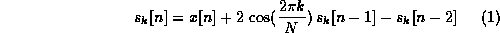
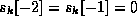
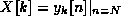
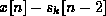
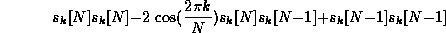
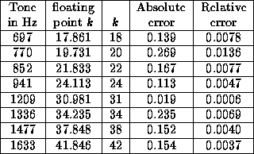

The Goertzel algorithm is more efficient than the Fast Fourier Transform
in computing an  -point DFT if less than DFT coefficients
are required [9].
In DTMF detection, we only need 8 of, for example, 205 DFT coefficients
to detect the first harmonics of the 8 possible tones, and then
apply decision logic to choose the strongest touch tone.
Since DTMF signals do not have second harmonics, we could compute
another 8 DFT coefficients to compute the second harmonics to detect
the presence of speech [3].
-point DFT if less than DFT coefficients
are required [9].
In DTMF detection, we only need 8 of, for example, 205 DFT coefficients
to detect the first harmonics of the 8 possible tones, and then
apply decision logic to choose the strongest touch tone.
Since DTMF signals do not have second harmonics, we could compute
another 8 DFT coefficients to compute the second harmonics to detect
the presence of speech [3].
The Goertzel algorithm computes the th DFT coefficient of the
input signal  using a second-order filter
using a second-order filter

where

. The th DFT coefficient is produced after the filter has processed samples: 
. The key in an implementation is to run for samples
and then evaluate .
The computation for takes one add (
) and one multiply-accumulate per sample. In DTMF detection, we are only concerned with the power of the th coefficient, :
The value of must be shorter than the samples in half of a DTMF
signaling interval (), be large enough for good frequency resolution
(), and meet the relative error specification 2(a).
We used a conventional value of = 205 [10][3] because
it is roughly half of 400 samples.
Decision logic can be added to give a valid DTMF signal if the same two
DTMF tones are detected in a row to add robustness against noise.
Table 1: Chosen values to minimize the error in .
